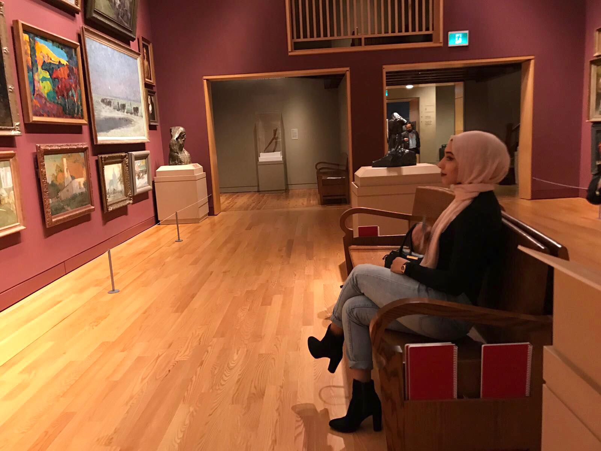

My name is Urooj Syed. I am a student at the University of Toronto in the fourth year of my Honors Bachelor of Arts degree with a specialist in Digital Enterprise Management and a minor in Professional Writing & Communication. I am concurrently working towards a Certificate of Digital Communication from Sheridan College for technical skills including web development and media production.
I love to express my admiration for my culture through artwork. I have experience in the visual arts of painting in various mediums as well as graphic and digital design with Photoshop, Illustrator and InDesign.
My fine arts work art aims to reflect themes of identity, culture, and the divine feminine, particularly in regards to my South Asian heritage.
Browse through my gallery for recent examples of my work. My passion for art fuels my determination to grow and maximize my potential as a self-taught artist. I continue to seek new opportunities to expand my portfolio. Contact me for further inquiries here.